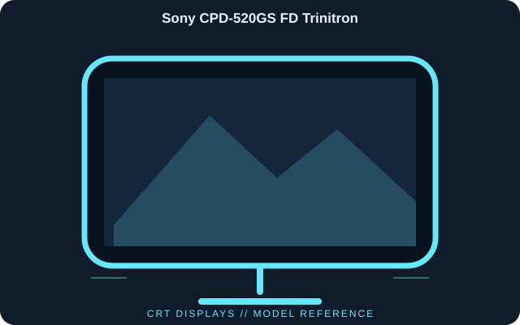

[ INDIVIDUAL COMPONENT // DISPLAYS ]
Sony CPD-520GS FD Trinitron
A 21-inch-class FD Trinitron desktop monitor designed for high-resolution multiscan computer video. The flat aperture-grille tube remains an analog-only display.

IDENTIFICATION: Sony CPD-520GS FD Trinitron; Late 1990s. Verify the full model code, region and hardware revision on the unit label. Published specifications describe the identified configuration; its matching manual and label take precedence if revisions differ.
Published specifications
| Catalog subcategory | Crt Displays |
|---|---|
| Exact model | Sony CPD-520GS FD Trinitron |
| Tube / viewable size | 21-inch nominal CRT; approximately 20-inch viewable area |
| Display technology | FD Trinitron aperture-grille color CRT |
| Maximum published timing | Up to 1920 × 1440 at 75 Hz; actual supported timing depends on scan frequency |
| Horizontal / vertical scan range | Approximately 30–107 kHz horizontal and 48–120 Hz vertical |
| Video inputs | Two 15-pin HD D-sub (VGA) analog inputs |
| Controls and management | On-screen adjustment; DDC/CI and VESA DPMS power management |
| Physical class | Large, heavy desktop CRT; confirm the individual unit label and regional power rating |
Compatibility & connectivity notes
Connect to a VGA-capable graphics output. A digital-only HDMI/DisplayPort source needs a suitable active digital-to-analog converter; confirm its supported scan range before connecting. The monitor has no digital input, and modern operating systems cannot exceed the display adapter’s analog output modes. Use a CRT-safe handling and service procedure; the tube and chassis retain hazardous high voltage.
Preservation notes
Record the complete model suffix, serial/date code, input selection, source device, cable or adapter, tested timing and observed condition. Retain the matching regional manual and any calibration or service records with the display. Follow the manufacturer’s cleaning and service instructions; do not open CRT equipment without appropriate high-voltage training.
Manufacturer documentation & authoritative sources
- Sony — CPD-520GS product supportManufacturer documentation and model-specific reference.
- Sony — CPD-520GS manualsManufacturer documentation and model-specific reference.